Grace · one AI video, about 15 seconds, music-only · job folder ugc/goth-highlow-skirt
Round 11 · Veo test · next step needs your OK
Veo keeps the skirt perfectly but won't shorten it
Veo 3.1 Fast, 6 s, from the knee still ($0.30). Her hands work the ties and the ruching tightens, and the skirt stays the real one the whole way.
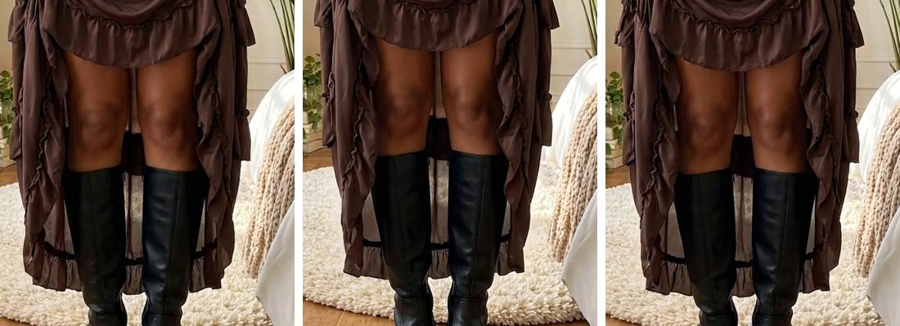
2x on the hem at 0, 3 and 5.9 s: the same height in all three.
That's four models on the pull: Omni, Omni with an end frame, Seedance in reverse, Seedance with an end frame, and now Veo. None of them shortens this skirt by its strings. The ones that keep the real skirt (Omni, Veo) never move the hem.
Tug-cut edit with what works: each look is its own moving clip, and the length changes on a cut right as her hand tugs the tie.
Have: knee look with her hands working the ties (this Veo clip, 0 to 2.7 s) and mid-thigh with a tie pulled out (R3, 0 to 2 s).
To make: the back view swaying, the one-leg step and the shortest look shifting her weight. Small moves only, on Veo since it held the skirt best: 3 x $0.30 = $0.90, up to $1.20 with one redo.
Cut: back, then tug, knee, tug, mid-thigh, tug, one leg, tug, shortest. All five looks, about 15 s.
Or Grace films a few seconds of the real pull if she has the skirt, and we cut it in. Spent so far $2.34. The tug-cut brings the job to about $3.24, up to $3.54. October Kie $152.04, no cap.
Round 10 · R3 test failed · Veo tested (round 11)
R3: the skirt stayed on, but it changed into a different skirt
R3, mid-thigh to shortest ($0.164).
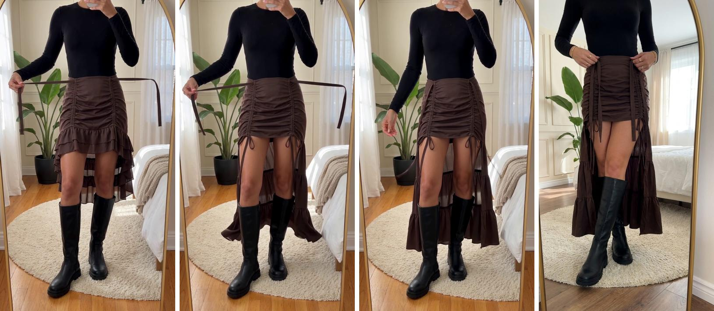
1.9 s, 2.6 s, 3.3 s, then the target still. From 0 to 2 s she pulls a tie out and the skirt is right, but the length doesn't change. At 2.25 s it jumps to a tight ruched mini with a separate long train, which isn't the real draped skirt. The tie also stretches to about a metre long. At 3.75 s it dissolves into the end frame.
Honest read after four tries: none of the video models on Kie can shorten this skirt by its drawstrings and keep it the real skirt. Omni keeps the skirt but won't move the hem. Seedance moves the hem but swaps the skirt or drops it. Every look renders well as a still, and the clips that only move her (no length change) held the real skirt.
Routes:
Tug-cut edit (my pick). Every look gets its own moving clip, and each length change happens on a cut, right as her hand tugs the tie. Fashion TikToks use this "pull and snap" transition all the time. We already have: knee with both hands pulling (S2 Omni clip) and mid-thigh with a tie pulled out (R3, first 2 s). Still to make, with small moves only: back view swaying, one-leg step, shortest look shifting her weight. That's 3 Omni clips at $0.315 = $0.945, up to $1.26 with one redo. All five looks, about 15 s.
One Veo 3.1 test ($0.30) from the knee still, asking for a continuous rise. Veo handles physics better, but it hasn't been tried on this. If it fails, we fall back to route 1.
Grace films the pull for real, if she has the skirt: a few seconds of her pulling the strings in a mirror. It would match the inspo exactly, and we'd mix it with the AI looks or film it all.
Spent so far $2.04. Route 1 brings the job to about $2.98, up to $3.30. October Kie $151.73, no cap.
Round 9 · R1 test failed
R1: the model took the skirt off
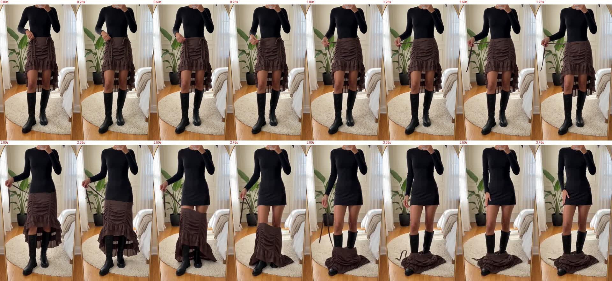
R1 ($0.164), every 0.25 s. For 0 to 1.75 s she pulls a tie out to the side and the skirt stays right. From 2 s the whole skirt slides off her hips onto the floor and the top turns into a dress. Reversed, that would look like pulling a skirt up from the floor, so I won't use it. The first 1.5 s may still work as a free "pulling the string" beat at mid-thigh.
What I know now: asked for a fabric change with no end frame, every model either barely moves the hem (Omni) or loses the skirt (Seedance). Omni also ignored an end frame that was framed differently. The route left is Seedance with a start and an end frame framed the same way. Seedance blends straight from one to the other (a known working mode in our runners). TOP (mid-thigh), ONELEG and SHORT were made together and are framed alike.
Next test ($0.164): TOP to SHORT, Seedance start + end frame. Both front sides rise from mid-thigh to the upper thigh while her hands pull the ties, played forward, no reversing. If it holds, the same method covers the rest: ONELEG to SHORT ($0.164), the back turn BACK to S2 ($0.164), and one knee-length still framed like TOP ($0.09) plus its clip to mid-thigh ($0.164).
Spent so far $1.874. If everything after the test works: about $2.63 total. October Kie $151.25, no cap.
Round 8 · reverse route · R1 failed (round 9)
The three new stills work. Omni ignored the end frame.
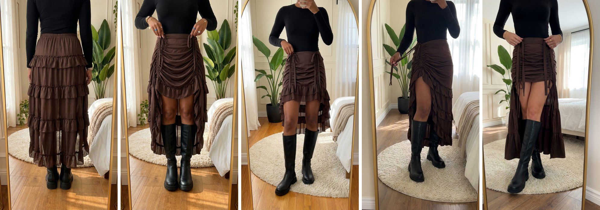
All five looks now exist as stills: back, top of the knee (S2), mid-thigh, one leg out, shortest. TOP and ONELEG show her phone hand at the top edge, which a uniform top crop removes for free.
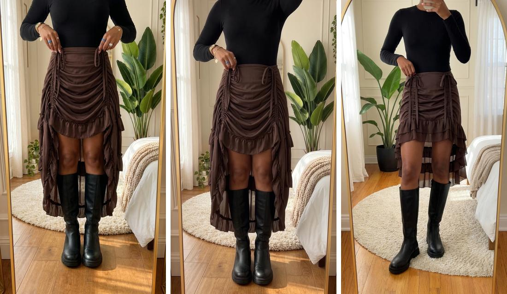
T2 test ($0.315): start (S2), the clip's real last frame, and the end frame I sent (mid-thigh). Omni kept the knee length and ignored the end frame. The new stills are also framed differently (the plant moved), so no model can blend between them cleanly.
New route: film it in reverse. Video models are good at fabric falling, and that was the weak spot when we asked them to pull it up. So each pull starts from the finished look (mid-thigh, one leg, shortest). She loosens the tie and the front drops to her knees. I play the clip backwards for free, so on screen her hands pull the tie up and the hem rises the whole way. Every frame comes from the real-skirt still. Because Omni failed this twice, these clips use Seedance 2.0 Mini on Kie: 4 s, $0.164 each.
Clip
How
Cost
R1 knee to mid-thigh (test first)
from TOP, let down, reversed
$0.164
R2 knee to one leg out
from ONELEG, let down, reversed
$0.164
R3 one leg to shortest
ONELEG to SHORT, start + end frame, both framed the same
$0.164
T1 back turns to front
BACK to S2, both framed the same
$0.164
New spend
4 Seedance clips
$0.66 (up to $0.82 with one redo)
Spent so far $1.71 (the T2 Omni test is not usable). Job total about $2.37, up to $2.53. October Kie $151.09, no cap.
Round 6 · storyboard · fixed in round 8
Back view works. The length edits did not.
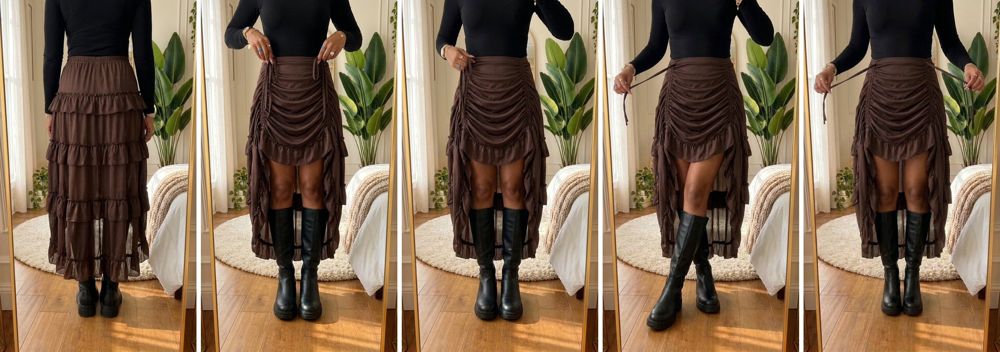
Back view (passes), S2, then the three edits: mid-thigh, one leg, shortest.
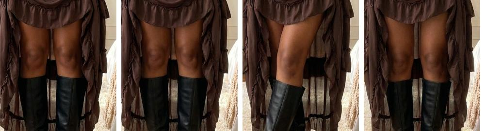
2x on the hem: S2 and the three edits all sit at the same height, just above the knee. The edit model kept the length and only moved her hands.
So S2 (hem just above the knee) becomes look 3, "above the knee". Three looks are still missing: top of the knee, one leg, and shortest.
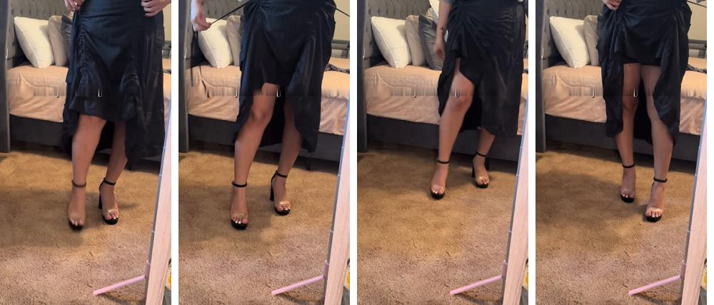
The inspo at each length, with the text painted out (free): top of the knee, mid-thigh, one leg, shortest. These go to the image model only as a guide to how long the skirt should be.
Fix: three fresh stills (top of the knee, one leg, shortest). Each one gets the real skirt photos, the approved S2 frame (for your room, the boots, her hands and the top) and the matching inspo frame as the length guide. That's $0.27, up to $0.36 if one needs a redo. After you OK them, the four clips run as planned ($1.26): back to top of the knee, top of the knee to above the knee (S2), above the knee to one leg, one leg to shortest.
Spent so far $1.125 (the three edits that didn't work cost $0.27). With the fix and the clips the job comes to about $2.66, up to $3.07 with redos. October Kie $150.82, no cap.
Round 5 · all five looks · approved
Confirmed in the inspo: five looks
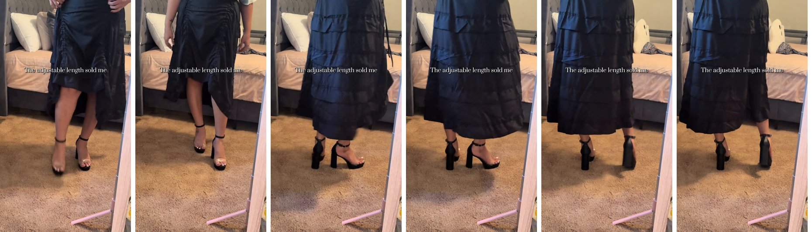
Inspo at 0.3, 1.5, 2.4, 2.7, 3.1 and 3.4 s. It starts with the front at the top of the knee, then she turns around and the back shows the long ruffle tiers.
Look
In the inspo
1. Front at the top of the knee
0.3 to 1.5 s
2. Turned around: the long ruffled back
2.4 to 3.4 s
3. Pulled up above the knee, to mid-thigh
3.5 to 5.5 s
4. One leg out
9.6 to 12.5 s
5. Shortest: both sides up
12.8 to 15.5 s
Our version (about 16 s): four clips that hand over to each other, so it plays like one continuous mirror take. Each clip runs from a start frame to an end frame we set. To keep it from being the inspo's exact movement, ours opens facing away (the back) and turns to the front, where the inspo turns from the front to the back. After that the length steps up the way the skirt really works.
Clip
From, to
Cost
T1 turn
back view (new edit) to the front at the top of the knee (approved S2 still)
$0.405
T2 pull
top of the knee to mid-thigh (new edit)
$0.405
T3 one leg
mid-thigh to one side at the upper thigh (new edit)
$0.405
T4 shortest
one leg to both sides at the upper thigh (new edit)
$0.405
New spend
4 still edits + 4 Omni clips
$1.62 (up to $1.94 with one redo)
Order of work: first the four end stills ($0.36) as one storyboard for your OK, then T2 (the pull) as the test clip, then the other three clips. Spent so far $0.765, so the job comes to about $2.39, up to $2.70. October Kie $150.46, no cap. The earlier walk and side-turn shots are dropped, because the turn now covers the back.
Round 4b · the one-leg look · replaced by round 5
Yes, the inspo also pulls one side for a one-leg look
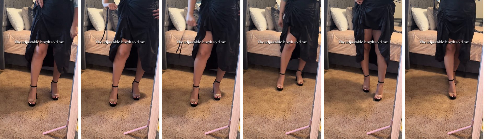
Inspo at 8.0, 9.6, 10.4, 11.4, 13.5 and 16.4 s. From 9.6 s she pulls one side string up and out. That side rises over one leg to the upper thigh while the other side stays longer, and at 11.4 s she steps that leg forward. At 13.5 s both sides are up, the shortest look. At 16.4 s she walks out.
New order, close to the inspo (about 16 s, four 4 s clips):
S2, the front pull: top of the knee to mid-thigh (start + end frame).
S5, the side pull (new): one side goes from mid-thigh to the upper thigh, one leg out, the other side stays at mid-thigh, and the other hand goes to her hip (start = S2's end frame, end = a new edit).
S3, the walk: she steps forward in the one-leg look (S3 still edited to that look).
S4, the side turn: shows the long ruffled back (from the edited S3 still).
Step
Cost
S2 end still (edit) + S2 clip
$0.405
S5 end still (edit) + S5 clip
$0.405
S3 still edit + S3 and S4 clips
$0.72
New spend
$1.53 (up to $1.85 with one redo)
Spent so far: $0.765, so the job comes to about $2.30, up to $2.61 with one redo. October Kie spend is $150.46, no cap this month. The shortest look (both sides up, 13.5 s in the inspo) is optional: another $0.405 for one more edit and clip.
Round 4 · fix for the rise · see 4b
Match the inspo's pull: top of the knee to mid-thigh
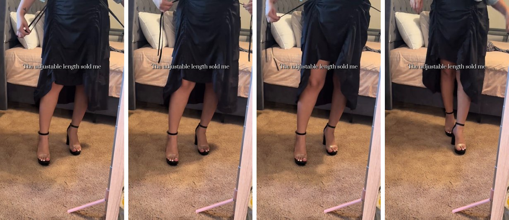
Inspo at 3.5, 4.5, 5.5 and 6.0 s. One hand pulls a front string up and out to the side, and the front hem rises from the top of the knee to mid-thigh. The pulled side ends up a little higher.
Why Omni came up short: in reference mode it only gets a start picture, so it decides on its own how far the hem moves. It moved it a few centimetres.
The fix: Kie's Omni also takes a start frame and an end frame, at the same price. We make the end frame ourselves so the clip has to land at mid-thigh:
End still for S2 ($0.09): an edit of the approved S2 still. Only two things change: one hand has pulled its tie up and out to rib height, like the inspo, and the front hem is at mid-thigh, a little higher on the pulled side. Everything else stays the same.
S2 clip ($0.315): Omni animates from the S2 still to that end still, so the hem has to rise all the way.
S3 still edit ($0.09): the walk still has the hem at the knee, so after the pull it would jump back down. Same edit: hem at mid-thigh. S4's turn starts from it as planned.
S3 + S4 clips ($0.63), after you OK the new S2 clip.
New spend: $1.125 ($0.405 for the S2 end still and clip first, then $0.72). With one likely redo, up to $1.44. Spent so far $0.765, so the job total would be about $1.89, up to $2.21.
Round 3 · S2 test clip · rise too small
S2 test clip: the pull (Omni, $0.315)
4 s, 1080x1920, Omni on Kie. Plays in place.
Passes: the skirt stays the real one in every frame (draped front, flat ties, long ruffled back, dark brown). No morphing, no flips, nothing showing through her hands, whole wrists. Room, boots and bracelet stay the same.
Her fingers close on the ties around 1.9 s and pull them up. The front ruching bunches tighter, but the hem only rises a little, from her knees to just above them. It is smaller than the inspo's change.
Small: the blue ring bands sit on both hands instead of one. I'm leaving it, per your rule on rings.
My pick: keep this take and make S3 (walk) and S4 (side turn from the S3 still) together for $0.63. The cut is S2, S3, S4, about 12 s. If you want a bigger rise, a new S2 take is $0.315, but Omni may move it just as little again.
Round 2 · storyboard · free route picked
Storyboard in your bedroom: S1, S2, S3, S4
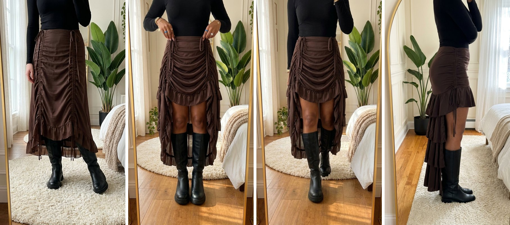
Left to right: S1, S2, S3, S4. Stills so far cost $0.45 (S2 twice).
S2 (the pull) passes: it has the real draped front, the long ruffled back, your room, black knee-high boots and the bracelet hand. At 2x the edges are clean. Her fingertips hook the tie loops, and the clip has her close her fingers and pull.
S3 (walk) passes: same skirt and room, one boot steps forward. Her phone arm shows at the top edge, so I crop a little off the top in the edit for free.
S1 (long) fails: it went back to a fitted ruched midi, and a lighter hand shows at the left edge.
S4 (side turn) fails: the top half is a tight pencil skirt, which the real skirt is not.
My pick (free): drop S1 and open on the pull, since the inspo also opens on the skirt already on. S4's turn then starts from the S3 still, and Omni gets the real side and back photos from the sheet. That makes three clips and about 12 s, which is the 9-12 s length the 60K and 65K winners run. Clips: 3 x $0.315 = $0.95, with the S2 test first. The other way: redo the S1 and S4 stills for $0.18, then four clips at $1.26.
Round 1 · S2 test still · redone in round 2
S2 test still vs the real skirt
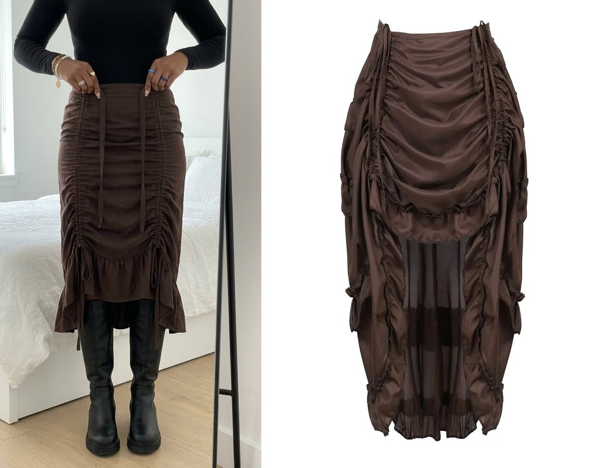
Left: AI still ($0.09). Right: the real brown skirt.
Good: dark brown colour, flat fabric ties, black knee-high boots with flat lug soles, the bracelet and rings, the room.
Wrong skirt shape: it came out as a fitted ruched midi. The real one has big loose swags, a sheer layer under the front, and a long ruffled back.
No grip: her fingertips rest on the waistband and the ties hang loose, so a clip would have nothing to pull.
Fix: one redo of S2 ($0.09). The prompt now says big loose swags exactly like the real front photo, with the sheer layer and long back showing. Each hand pinches one tie, and the strap runs taut from the waistband up into her fingers.
Round 0 · plan · approved
The inspo and the real skirt
Inspo, @jaquelineee809, 17.8 s: long, pull the strings, shorter, walk and turn. Heels, which we swap for boots.
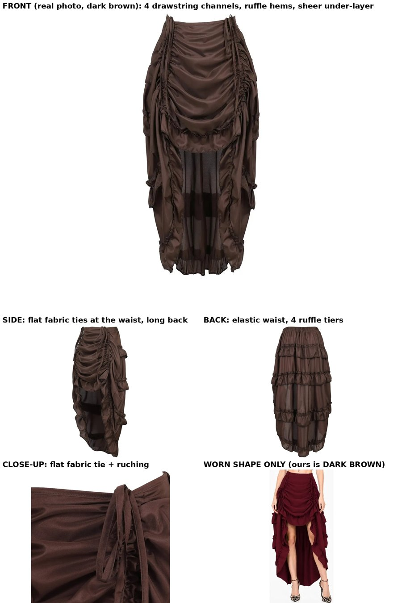
Product sheet, real listing photos only. Every still and clip gets it.
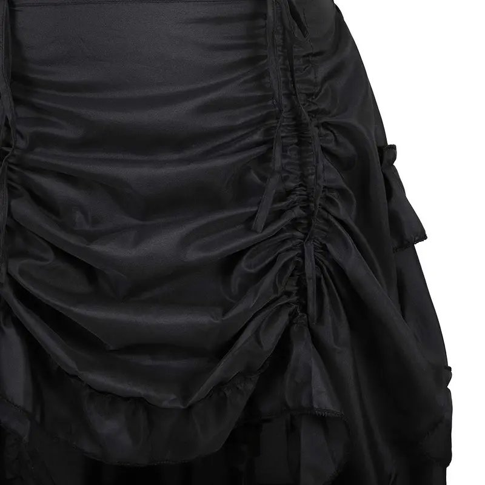
Real close-up of one drawstring channel. It goes to Omni as the product-lock reference.
Shot plan (every shot shows the skirt, so all four are Omni on Kie, 4 s each)
#
Time
Type
What moves
S1
0 to 3.5 s
HAND-FREE
Mirror view, waist down. Strings let out, the skirt hangs long. She shifts her weight and one boot steps forward.
S2
3.5 to 7.5 s
HAND
Both hands grip the front cords and pull up. The front gathers and rises above the knee while the back stays long. This is the riskiest shot, so it gets tested first.
S3
7.5 to 11.5 s
HAND-FREE
High-low now. Two steps toward the mirror, and the back ruffles swing.
S4
11.5 to 15.5 s
HAND-FREE
A quarter turn shows the side tie and the long ruffled back, then she faces front again.
Room: bright white bedroom, light oak floor, white bed, a thin black mirror frame on the edge (the inspo had a pink carpet and a grey bed). Outfit: black fitted long-sleeve top tucked in, bare legs. Your picks: dark brown skirt, black knee-high boots (flat lug sole), bracelet hand sheet, no text, music only, stills on Kie.
Grace's hand sheets (pick one for S2)
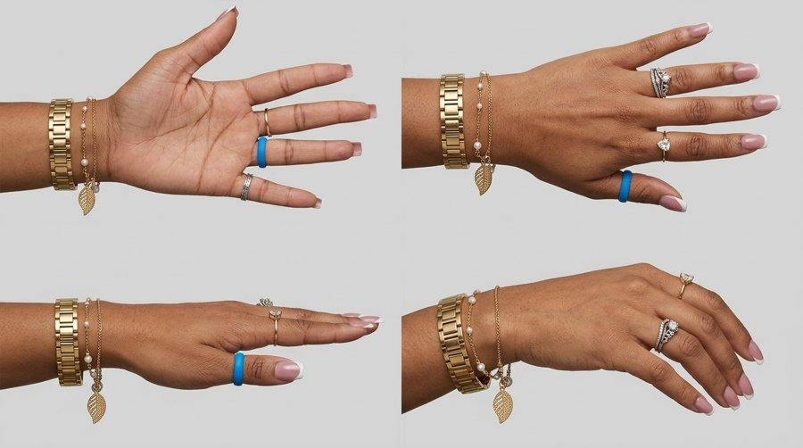
With the gold bracelet and pearl chain
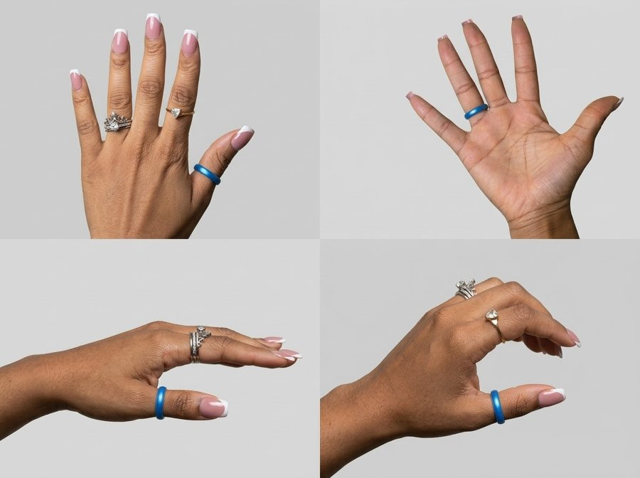
Bare wrist, same rings
Cost
Step
Model
Cost
4 stills (S2 first as the test)
Gemini 3 Pro Image on Kie
$0.36
4 clips (S2 first as the test)
Google Omni 1.1 Flash on Kie, 4 s
$1.26
Total
$1.62 ($2.03 with one redo)
Or stills free in your Gemini app
clips only
$1.26 ($1.58 with one redo)
October Kie spend so far: $149.70 (no cap this month). Kie balance $9.88.